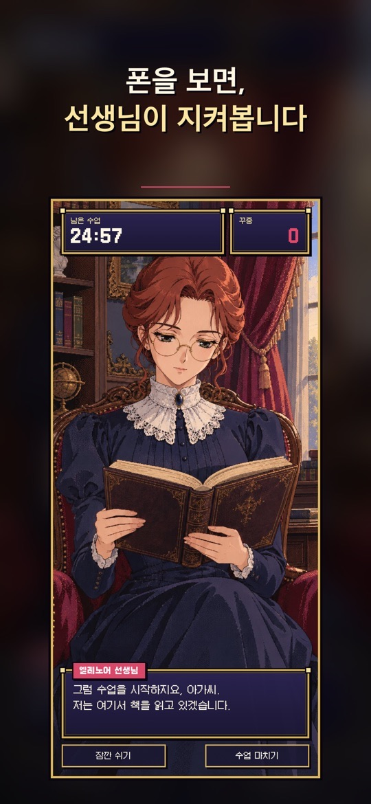
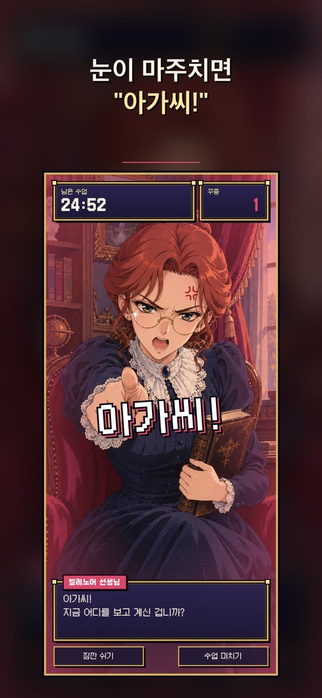

휴대폰을 거치대에 세우고 수업을 시작하면, 맞은편에서 책을 읽던 선생님이 아가씨가 폰을 쳐다볼 때 “아가씨!” 하고 혼을 내는 시선 인식 집중 타이머입니다. 수업이 끝나면 집중 시간과 꾸중 횟수로 성적표를 받습니다.
어떻게 동작하나요
- 시선 인식: 앞 카메라로 정면으로 보기, 곁눈질, 딴 데 보기, 자리 비움을 알아채고, 다른 앱에 다녀오는 것도 잡아낸다고 스토어 설명은 밝힙니다.
- 점점 엄해지는 꾸중: 걸리면 꾸중 횟수가 올라가고, 세 번 연속 걸리면 선생님이 진짜 화를 냅니다.
- 오늘의 성적표: 수업이 끝나면 수업 시간, 집중 시간, 집중도, 꾸중 횟수와 S~C 등급이 나옵니다. 성적표 달력에서 날짜별 등급, 집중 시간, 연속 출석을 봅니다.
- 수업 길이: 25·50·90분 중에서 고르거나 직접 정하고, 수업 중에 잠깐 쉴 수 있습니다.
선생님과 이용 조건
- 엘레노어 선생님(무료): 엄격하지만 공정한 가정교사입니다.
- 유료 선생님: 훈장님(가장 엄한 스승), 클라우드(밤의 서재의 젊은 집사), 세드릭 경(호위 기사). 영구 고용하거나 광고를 보고 한 번씩 함께 공부할 수 있습니다. 세드릭 경은 Google Play 설명과 App Store 스크린샷에는 있지만 App Store 설명 본문에는 아직 적혀 있지 않습니다.
- 선생님마다 엄격함이 다릅니다. 예를 들어 선택 화면에서 클라우드는 ‘2초 보면 꾸중’으로 안내됩니다.
- 카메라 영상은 기기 안에서만 처리되고 저장하거나 어디에도 보내지 않으며, 회원가입이 필요 없다고 두 스토어 모두 밝힙니다. 앱은 한국어·영어·일본어·중국어를 지원합니다(App Store 기준).
처음 시작하기
- 아래 스토어 링크에서 설치합니다. 아이폰·아이패드와 안드로이드 폰·태블릿을 지원합니다.
- 앞 카메라가 얼굴을 볼 수 있도록 휴대폰을 거치대에 세우고, 카메라 권한을 허용합니다.
- 선생님을 고르고(처음에는 무료인 엘레노어 선생님) 수업 길이를 정합니다.
- 수업을 시작하면 남은 수업 시간과 꾸중 횟수가 위에 표시됩니다. 쉬어야 할 때는 잠깐 쉬기, 끝낼 때는 수업 마치기를 누릅니다.
- 수업이 끝나면 오늘의 성적표를 확인하고, 성적표 달력에서 기록을 봅니다. 1.0.3(App Store)부터는 첫 수업을 마친 뒤 수업 알림을 켤 수 있습니다.
공부할 때 참고할 팁
아래는 스토어 설명과 화면 안내를 바탕으로 한 사용 제안입니다. 집중력 향상을 보장하는 앱이 아니며, 시선 인식은 조명과 자세에 따라 틀릴 수 있습니다.
- 거치 위치를 고정하세요. 최신 버전은 수업을 시작할 때 지난번 자세 그대로 할지, 시선을 다시 맞출지 고르게 해 줍니다. 자리를 바꿨다면 다시 맞추는 편이 낫습니다.
- 얼굴이 잘 보이게 밝은 곳에서. 역광이나 어두운 방에서는 시선을 잘못 읽을 수 있습니다.
- 짧은 수업부터. 25분 수업으로 시작해 성적표 등급을 보며 50분, 90분으로 늘려 보세요.
- 선생님은 엄격함으로 고르세요. 꾸중이 너무 잦으면 덜 엄한 선생님으로, 너무 느슨하면 더 엄한 선생님으로 바꿔 보세요.
- 쉬는 시간은 따로 잡으세요. 폰을 봐야 하거나 자리를 비워야 할 때는 몰래 보기보다 수업 화면의 잠깐 쉬기 버튼을 먼저 눌러 보세요.
스크린샷
App Store 한국 스토어에 게시된 공식 홍보용 스크린샷입니다(버전 1.0.3 기준, 홍보 문구 포함). 표시된 가격은 예시이며 실제 가격은 스토어와 앱에서 확인하세요.


자주 묻는 질문
- 카메라 영상이 저장되거나 전송되나요?
- 두 스토어 설명 모두 카메라 영상은 기기 안에서만 처리되고 저장하거나 어디에도 보내지 않는다고 밝힙니다. 선택 화면에도 ‘영상은 기기 밖으로 나가지 않아요’라고 적혀 있습니다.
- 폰을 보지 않았는데 꾸중을 들었어요.
- 시선 인식은 조명, 안경 반사, 거치 각도에 따라 틀릴 수 있습니다. 수업을 시작할 때 시선을 다시 맞추고, 그래도 반복되면 기기 모델과 함께 알려 주세요.
- 무료로 쓸 수 있나요?
- 앱 설치와 엘레노어 선생님은 무료입니다. 다른 선생님은 영구 고용(인앱 구매)하거나 광고를 보고 한 번씩 함께할 수 있습니다. Google Play 표시: 광고 포함, 인앱 구매.
- 기기를 바꿨는데 고용한 선생님이 없어요.
- 선생님 선택 창의 구매 복원을 눌러 보세요. 구매할 때 쓴 스토어 계정으로 로그인되어 있는지도 확인하세요.
- 버그는 어떻게 알리나요?
- 상황을 적어 ricecookey.help@gmail.com으로 보내 주세요. 기기 모델, OS 버전, 앱 버전을 함께 적어 주시면 확인이 빠릅니다.
스토어 링크
무료 앱(광고·인앱 구매 포함)
iOS 15.0 이상, 연령 등급 4+(App Store 기준).
문의
질문, 요청, 버그 제보: ricecookey.help@gmail.com
참고 자료와 확인 범위
- App Store 페이지 — 버전 1.0.3(2026년 10월 19일 배포), 설명·업데이트 내용·스크린샷
- Google Play 페이지 — 2026년 10월 18일 업데이트, 설명과 업데이트 내용
기능과 메뉴 이름은 2026년 10월 20일에 확인한 스토어 설명과 공식 스크린샷 문구를 따랐습니다. 업데이트로 달라질 수 있으며, 앱 안의 표시가 이 페이지보다 우선합니다.
English
Focus, My Lady is a gaze-tracking study timer. Stand your phone up and start a lesson; your tutor reads quietly across from you, and the moment you look at your phone she shuts her book and scolds you: “My lady!” When the lesson ends you get a report card based on focus time and scoldings.
How it works
- Gaze tracking: using the front camera it notices looking straight ahead, side glances, looking away and leaving your seat, and the store description says it also catches visits to other apps.
- Escalating scoldings: each catch adds to the scolding count, and three in a row make the tutor genuinely angry.
- Today's report card: after the lesson you see lesson time, focus time, focus rate, scoldings and an S–C grade. A report-card calendar shows grades, focus time and streaks by date.
- Lesson length: choose 25, 50 or 90 minutes or set your own, and take short breaks during a lesson.
Tutors and terms
- Ms. Eleanor (free): a strict but fair governess.
- Paid tutors: the Village Master (the strictest), Claude (a cool young butler in a night-time study) and Sir Cedric (a guard knight). Hire them permanently or study with one once by watching an ad. Sir Cedric appears in the Google Play description and App Store screenshots but not yet in the App Store description text.
- Tutors differ in strictness; for example, the selection screen says Claude scolds after two seconds of looking.
- Both stores state that camera video is processed only on the device and never saved or sent, and no sign-up is needed. The app supports Korean, English, Japanese and Chinese (App Store).
Getting started
- Install from the store links below. It supports iPhone and iPad, and Android phones and tablets.
- Stand the phone so the front camera can see your face, and allow camera access.
- Choose a tutor (Ms. Eleanor is free to start) and a lesson length.
- During the lesson, the time left and the scolding count are at the top. Use Short break (잠깐 쉬기) when you need one and End lesson (수업 마치기) to finish.
- Read today's report card and check past results in the report-card calendar. Since 1.0.3 (App Store) you can turn on lesson reminders after finishing your first lesson.
Study tips
These suggestions are based on the store descriptions and on-screen text. The app does not guarantee better concentration, and gaze tracking can be wrong depending on lighting and posture.
- Keep the phone in the same spot. The latest versions let you choose at the start of a lesson whether to keep your last posture or recalibrate your gaze. If you moved, recalibrate.
- Study somewhere bright. Backlight or a dark room can make gaze reading less reliable.
- Start with short lessons. Begin with 25 minutes and move to 50 or 90 as your grades improve.
- Pick a tutor by strictness. If scoldings feel too frequent, switch to a gentler tutor; if too lax, a stricter one.
- Take breaks openly. When you need to look at your phone or step away, tap the Short break button on the lesson screen first rather than sneaking a look.
Screenshots
Official promotional screenshots from the Korean App Store (version 1.0.3, with marketing captions in Korean). Prices shown are examples; check the store and the app for actual prices.
FAQ
- Is camera video saved or sent?
- Both store descriptions say video is processed only on the device and never saved or sent. The selection screen also says video does not leave the device.
- I got scolded without looking at my phone.
- Gaze tracking can misread with lighting, glasses glare or camera angle. Recalibrate at the start of the lesson, and if it keeps happening, tell us your device model.
- Can I use it for free?
- The app and Ms. Eleanor are free. Other tutors can be hired permanently (in-app purchase) or joined once per ad. Google Play shows: Contains ads, In-app purchases.
- I changed phones and my hired tutor is gone.
- Tap Restore purchases (구매 복원) in the tutor selection window, and check that you are signed in with the store account you bought with.
- How do I report a bug?
- Describe what happened to ricecookey.help@gmail.com. Including your device model, OS version and app version speeds things up.
Store links
Free app (ads and in-app purchases)
Requires iOS 15.0 or later, rated 4+ (App Store).
Contact
Questions, requests and bug reports: ricecookey.help@gmail.com
References and scope
- App Store listing — version 1.0.3 (released October 19, 2026), description, release notes and screenshots
- Google Play listing — updated October 18, 2026; description and release notes
Features and menu names follow the store descriptions and official screenshot text checked on October 20, 2026. Updates may change them, and what the app shows takes precedence over this page.